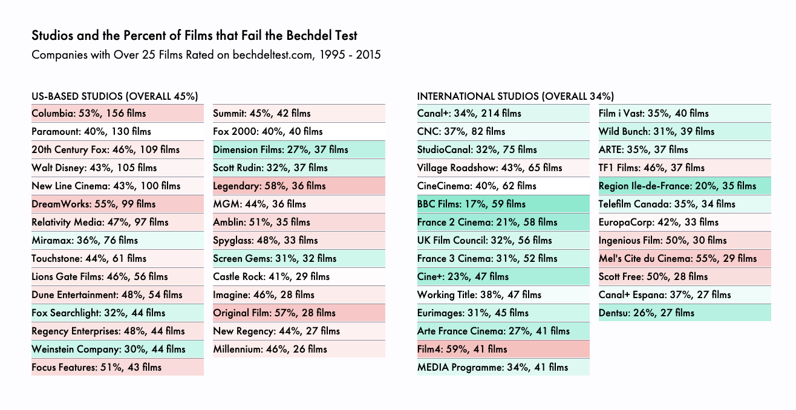

Why Inclusiveness Matters
When women are not visible on-screen, we reinforce stereotypes off-screen. Hollywood is promoting a culture of female invisibility, where women can't save the planet, win the big game, or fight the bad...wait for it...guy. Instead, they're props who can only gab about men.
That's a small sample: only 200 movies. So let's look at every film (about 4,000 movies) related on bechdeltest.com
Here's a look at the individuals creating such films: the most prolific directors, producers and writers in Hollywood.

It's important to call out the studios. They make, buy, and distribute films. For example, while the new Star Wars sequel was boss (with Rey and Finn as leads!), Lucasfilms hasn't had the best track record: 4 out of 7 Star Wars fail the Bechdel Test.
European studios are far more progressive than the US. France is killing it. Canal+ has about 200 films in our dataset, and a low 34% fail the Bechdel Test. US studios are a relative embarrassment: Warner Bros. (53% fail), Columbia(53% fail), and DreamWorks (55%).